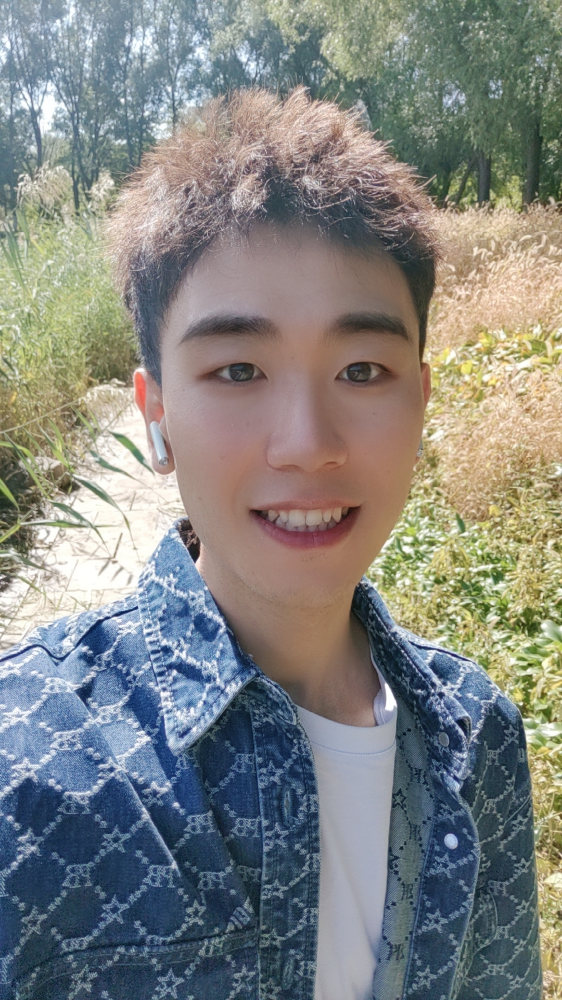

Ph.D. Candidate in Artificial Intelligence · Jilin University
Hello! I am He Kong, a Ph.D. candidate at the School of Artificial Intelligence, Jilin University. I study interaction and coordination among intelligent agents and develop algorithms for complex environments. My research currently focuses on multi-agent reinforcement learning and LLM-powered agents.
Email: konghe19@mails.jlu.edu.cn | konghe24@mails.jlu.edu.cn
GitHub: CrazyBayes